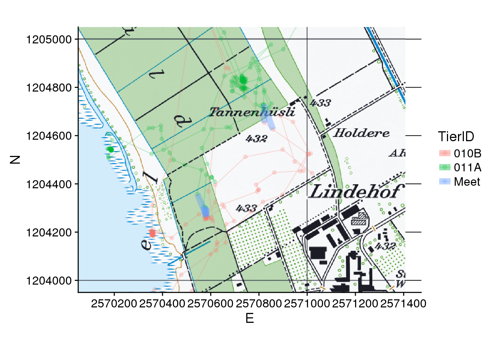
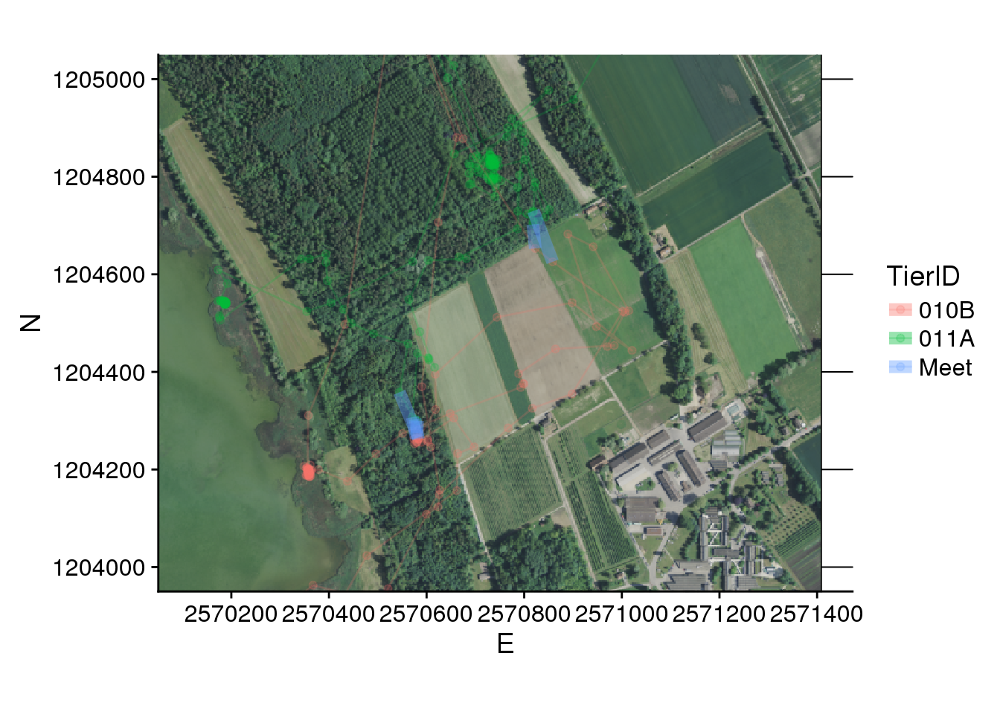

Exercise 4
Learning Outcomes
- You are able to conceptualize a simple movement pattern and implement data structures and corresponding procedures for detecting it using R.
- You understand the sensitivity of movement patterns to pattern parameter thresholds
Prerequisites
Readings Skills from “R for Data Science” (Wickham and Grolemund 2017):
- RS4.1 Chap15 Functions (19p, 269-289)
Readings Theory, Laube (2014) - R4.1 Chap.2, p. 29-58
Preperation
Open your R Project from last week. Either run your own script from last week or the following lines to transform the data into the form we need for today’s exercise. Important: Reinstall the package CMAtools since we have a few updates.
devtools::install_git("https://github.engineering.zhaw.ch/PatternsTrendsEnvironmentalData/CMAtools.git") # Reinstall this package, since we have a few updates
install.packages("ggpmisc") # you dont really need this package. We just use it to add layers at specific positionslibrary(tidyverse)
library(CMAtools)
library(sf)
# Import as tibble
wildschwein_BE <- read_delim("../CMA_FS2018_Filestorage/wildschwein_BE.csv",",")
# Convert to sf-object
wildschwein_BE = st_as_sf(wildschwein_BE, coords = c("Long", "Lat"), crs = 4326,remove = FALSE)
# transform to CH1903 LV95
wildschwein_BE <- st_transform(wildschwein_BE, 2056)
# Add geometry as E/N integer Columns
wildschwein_BE <- st_coordinates(wildschwein_BE) %>%
cbind(wildschwein_BE,.) %>%
rename(E = X) %>%
rename(N = Y)
# Compute timelag, steplength and speed
wildschwein_BE <- wildschwein_BE %>%
group_by(TierID) %>%
mutate(
timelag = as.numeric(difftime(lead(DatetimeUTC),DatetimeUTC,units = "secs")),
steplength = euclid(lead(E, 1),lead(N, 1),E,N),
speed = steplength/timelag
)Tasks
Task 1: Filter and visualize trajectories
Create a subset of your data (wildschwein_BE) by filtering it to 26-27 October 2014 and save the data to a new variable (name the new variable wildschwein_fil). Visualize your data spatially to see potential meeting sites. You can add pk100_BE as a background map like we did in task 6 of exercise 1.
Tip: If you do not want pk100_BE to change the extent (xmin-xmax, ymin-ymax) of the plot, use annotation_spraster() rather than geom_spraster_rgb(). See ?annotation_spraster() for more information.
Figure 10: Animal 005A is never near the other three individuals. You can exlude this animal from futher analysis.
Input: Creating functions
We have used a variaty of different functions designed by other developers. Sometimes we need to do an operation multiple times, and most often it is reasonable to write a function in this case. You should consider writing a function whenever you’ve copied and pasted a block of code more than twice (Wickham and Grolemund 2017).
You have all used the function euclid() multiple times. We’ve written this function ourselves, and the code is very simple:
euclid <- function(x1,y1,x2,y2){
distance <- sqrt((x1-x2)^2+(y1-y2)^2)
return(distance)
}First, you must pick a name for your function (here: euclid). The values within function() are placeholders for arguments that you want to use within your function (here: x1,y1,x2,y2). Within the curly brackets {} you can place your R script. Finally, use return() to make sure the function returns the desired output.
All you need to do now is run these few lines of code at the beginning of your script, and you can use the function for your entire R session. After starting a new session, you will simply have to re-run the lines. So it might be a good idea to place this function within the section Loading environment / libraries of your project.
Task 2 (Optional): Create custom function
In the next task, we will need a function which enables us to round the attribute “Time” in our Datetime Object to the nearest quarter hour. To our knowledge, there is no function that does this for us, so we will have to create our own function. Create a function that takes a Datetime object and rounds minutes to the multiple of any given value (in our case we propose 15 min). Some help is given in the code below:
# round a number to a multiple of another number
minutes <- 1:60
multiple <- 15
round(minutes/multiple)*multiple
## [1] 0 0 0 0 0 0 0 15 15 15 15 15 15 15 15 15 15 15 15 15 15 15 30
## [24] 30 30 30 30 30 30 30 30 30 30 30 30 30 30 45 45 45 45 45 45 45 45 45
## [47] 45 45 45 45 45 45 60 60 60 60 60 60 60 60
y <- Sys.time()
y
## [1] "2018-05-18 09:38:15 CEST"
class(y)
## [1] "POSIXct" "POSIXt"
x <- as.POSIXlt(y) # Turns a POSIXct into POSIXlt
x
## [1] "2018-05-18 09:38:15 CEST"
x[["min"]] # retrieves minutes of POSIXlt
## [1] 38
x[["min"]] <- 40 # sets minutes of POSIXlt
x
## [1] "2018-05-18 09:40:15 CEST"
# Gets minutes as a decimal value
min_decimal <- x[["min"]] + x[["sec"]]/60Task 3: Resample data
We propose conceptualizing the pattern “meet” as “being close in space and time”, with the notion “close” to be defined for the spatial and the temporal case. We will simplify the problem slightly so that we can use a number of R tools and data structures you now have learned to use by now. As a first simplification we propose resampling the temporal granularity in such a way, that all observations are sampled at identical times. This allows us using the data science concept join for detecting the temporal expression of meet - using DateTimeUTC as the key variable in a join statement: Observations with an identical time stamp will match. Once we have identified the temporal matches, we check if the concurrent observations are also close in space based on euclid().
Let’s see if we can find a suitable sampling interval. Since we established that the sampling interval varies over time (see Task 1 from Exercise 2), let’s see whether the sampling interval is similar between the different animals:
Figure 11: With a few exceptions, the sampling interval is around minutes (this visualization is not part of the task).
With a few exceptions, the sampling interval is around minutes. For basically all join methods, we need identical values to serve as a join key. We therefore need to resample our data to a common interval. Your task:
- Use the function
round_minutes_to(created in the previous task) to round “minutes” to a multiple of 15. If you haven’t created this function, you can useround_Datetime_to()fromCMAtools. - Linearly interpolate the
E/Nvalues to the new sampling interval. Use the functionlinear_interpolfromCMAtoolsto solve this step. The function takes 3 arguments: The first is your originalDatetimecolumn. The second is the roundedDatetimecolumn from step 1. The third is the value you want to interpolate, soE/N(you will have to call the function twice).
Figure 12: After resampling, the movement data is slightly modified (this visualization is not part of the task).
Task 4: Seperate into multiple data.frames
Now Divide the wildschwein_fil object (with filter()?) into one data.frame per animal available for these dates.
Note: If you code the same lines multiple times and/or if you create multiple variables named var_1, var_2, var_3 or similar, there are usually more elegant ways to do this. If you are an intermediate to advanced programmer (or want to be), you can use map() specifically for this task (dividing wildschwein_fil into one data.frame object per animal).
Task 5: Join data by time
Now that you have different data.frames (either stored in separate variables or in a list), use full_join() (or any appropriate join function) to join the data.frames pairwise by the key DatetimeRound. Use a join type such that the resulting table contains observations at the same (resampled) time. After that, use euclid() to calculate distances between individuals at temporally corresponding observations. Use a reasonable threshold on the calculated distance to determine meets. We will use 150 meters in our example. Your result should be a short list of meet patterns (pairs of individuals that are at the same time (joins) at the same space (euclid())).
Task 6: Visualize data with ggplot
For pairs that do meet, produce a plot with the trajectories of the the two days (26/27 October 2014, stored in wildschwein_fil) and join the points where the two individuals met (you can use geom_segment() for this). There are two additional .tif files on moodle, pk25.tif and swissimage_250cm.tif.

Task 7 (Optional): Visualize data with leaflet
As already mentioned last week (Task 3) ggplot makes nice static graphics, but they can be somewhat cumbersome when attempting to explore the data. For example, the zooming functionality of an interactive plot is an especially powerful exploratory tool. If you’ve managed to create the leaflet plot last week, you can now use this library again to explore the meet-patterns. Note:
leafletdoes not seem to respect the animals IDs when adding the trajectories as adata.frame- To solve this, I cast the
sf POINTobject toLINESTRING. CastingPOINTtoLINESTRINGseems to rearrange the order of the trajectory. I used this post to solve this issue - remember to transform (
st_transform()) thesf LINESTRINGobject intoWGS84(4326), sinceleafletcannot handleCH1903+ LV95
Task 8 (optional): Visualize data as timecube with plotly
Finally, you can nicely visualize the meeting patterns and trajectories in a Space-Time-Cube (Hägerstraand 1970) with the package plotly. There are some nice ressources available online.
Figure 13: Trace 0, 1 and 2 show the trajectories of the three individuals in 3D space, while time is the z-axis. The Dots represent instances where two animals are spatiotemporally close to each other.
References
Wickham, Hadley, and Garrett Grolemund. 2017. R for Data Science: Import, Tidy, Transform, Visualize, and Model Data. 1st ed. O’Reilly Media, Inc.
Laube, Patrick. 2014. Computational Movement Analysis. SpringerBriefs in Computer Science. Springer International Publishing. https://books.google.ch/books?id=xMRpBAAAQBAJ.
Hägerstraand, Torsten. 1970. “What About People in Regional Science?” Papers in Regional Science 24 (1): 7–24.